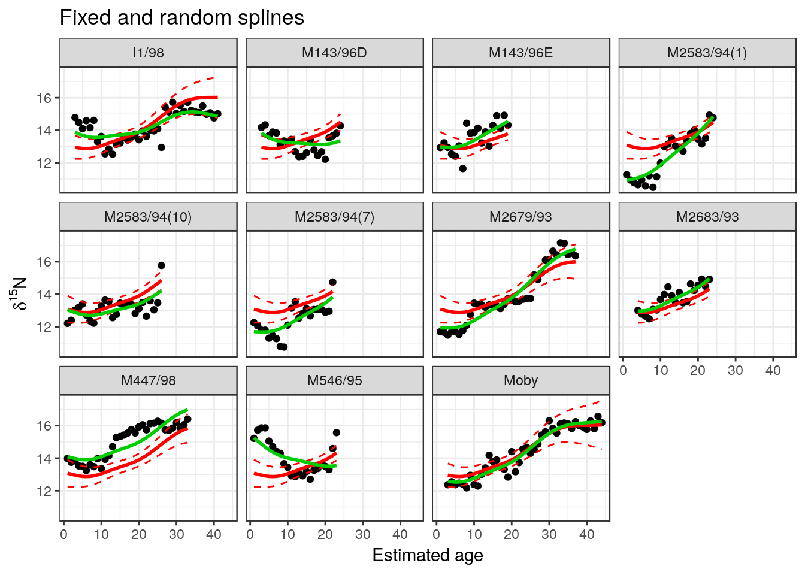

Chapter 13 Introducing mixed effects modelling
Analysis of covariance is often used when there are a small number of factor levels. If we had two or three whales either subsetting for each whale or analysis of covariance would be the only appropriate methods. There would not be enough replication to think about the data as having been drawn from a larger population of whales that it could represent. Each case would be treated as being distinct. However, as we get more data analysis of covariance becomes clumsy and less appropriate as a technique. We can see that in this example. A mixed effects model treats each level of a factor as a random effect. This is a powerful technique when we have enough data as we are effectively trying to draw out some underlying population level pattern, which we may want to use when comparing the response of each individual. Mixed effects modelling also has some advantages for data sets with missing data or unbalanced numbers of observations for each group.
The example was adapted from Zuur’s book on mixed effects models. Mixed effects are also known as hierarchical models. It is important to be aware of the potential usefulness of such models and the difference between fixed and random effects. The last model we fitted used a regression equation for each whale in turn. This approach assumes the identity of the whale is a fixed factor. We need to know each whale’s name in order to use the model! If we want to generalise for all whales we would be much better to think of the whales as compromising a random sample from all the whales that we might have found.
The following R code uses a mixed effects model approach to fit a separate regression line for each whale. To cut a long story short, and to simplify the overall idea, you may think of the result as being rather similar to taking the mean slope and intercept from all the individual regressions and finding confidence intervals for the pooled result. This was a traditional way of analysing data of this type and it is still used by some researchers. It is not “wrong” in essence, but modern methods are both easier to apply and more formally correct due to the manner in which unbalanced samples are handled. Look at the plot we produced for a regression fitted to each whale to get an idea of what the model is based on. Imagine averaging the slopes and intercepts shown in this figure in order to get an intuitive idea of the basis for the model.
13.1 Using the nlme package
The nlme package name stands for “non linear mixed effects”. It has some poweful functions for fitting non linear models with random effects. More recently the lme4 package has become more popular for linear mixed effects as the algorithm used is prefered by mathematical statisticians. In almost all applied situations the results from using either package for linear mixed effects models are identical. Plotting the models is easy using nlme as the package has a grouping function for the data and a series of default plots that use the lattice package. Lattice plots have now largely given way to ggplots when formally presenting results as ggplots are more flexible and nicer looking. However the default in nlme is easy to use and easy to interpret.
13.1.1 Intercept only model
library(nlme)
w<-groupedData(X15N~Age|Whale,Whales)
intercept.mod<-lme(X15N~Age,random=~1|Whale,data=w)
print(plot(augPred(intercept.mod,level=c(0,1))))
13.1.2 Random slopes model
slope.mod<-lme(fixed=X15N~Age,random=X15N~Age|Whale,data=w)
print(plot(augPred(slope.mod,level=c(0,1))))
The fixed effect is the underlying trend of increasing \(\delta^{15}N\) levels with age. The random effect is the variation in slope and intercept between whales. We can test which model is prefered on statistical criteria by comparing them.
anova(intercept.mod,slope.mod)## Model df AIC BIC logLik Test L.Ratio p-value
## intercept.mod 1 4 792.3965 807.2777 -392.1982
## slope.mod 2 6 669.3825 691.7044 -328.6913 1 vs 2 127.0139 <.0001So the slope model provides a significantly better fit to the data, just as we found when taking whale as a fixed effect.
13.1.2.1 Confidence intervals for the effects
intervals(slope.mod)## Approximate 95% confidence intervals
##
## Fixed effects:
## lower est. upper
## (Intercept) 11.60509740 12.41013148 13.2151656
## Age 0.03376861 0.07914293 0.1245172
## attr(,"label")
## [1] "Fixed effects:"
##
## Random Effects:
## Level: Whale
## lower est. upper
## sd((Intercept)) 0.84344384 1.33071563 2.0994926
## sd(Age) 0.04669552 0.07443052 0.1186389
## cor((Intercept),Age) -0.97238683 -0.90157346 -0.6787395
##
## Within-group standard error:
## lower est. upper
## 0.5750660 0.6242716 0.6776874By taking into account the lack of independence we now get a much wider confidence intervals for the coefficients than we did when we very naively fitted a regression to the pooled data without taking into account the identity of the whale from which the data was obtained. However we now have a generalisable model based on a sample of size of n=15, rather than the model with far too many degrees of freedom. The mixed model is better than the model used in the analysis of covariance, as this could only be used for prediction if you provide the identity of the particular whale that you are interested in.
Notice that the parameters estimated for the random effects are standard deviations. If you can imagine actually fitting all 15 separate models, writing down the interecept and the slope 15 times and finding the mean and standard deviation of each you have approximated the operation carried out by the mixed effects modelling. The standard deviations are approximations, so there are also confidence intervals for these provided by the full fitted model.
There is a whole lot more to mixed effects modelling, but this result is quite simple to understand in this context. It provides a robust solution to the issue of finding confidence intervals for the mean slopes and intercepts when analysis of covariance shows that seperate regression models are needed for each level of a factor, but we do want to treat the levels of the factor as random draws from a population as there are too many factor levels to be concerned with comparisons between each one. Mixed effects also handles unbalanced samples, as if one whale has fewer observations the overall model gives the data less weight.
Finding an underlying trend in N15 levels is only part of the story told in the paper. An issue that has been set well to one side in this still simplified example is whether a linear regression is the best approach to finding an underlying pattern. In fact Zuur et al used GAMs in order to capture the non linear relationship that some individuals seem to have.
13.2 Using the package lme4
The alternative package to nlme is lme4. This uses a more sophisticated approach to actually fiting the model that is considered more reliable mathematically by some statisticians. In most real life situations there is little difference between the results from each package and they can usually be used interchangeably.
A slightly unusual aspect of lme4 is that it does not provide p-values for the test of signficance of the effects by default. This was a deliberate decision made by the author of the package (Douglas Bates). The argument is that the degrees of freedom are ill-defined for many technical reasons. As p-values are only really useful if a statistic such as t is close to the boundary of significance the argument goes that there is no point in calculating them unless they are exact. A t value of 3 is going to be significant whatever and a t value of 1 will not be. However some people demand p-values and they can be calculated quite easily. The package Lmertest adds these calculations to the output of lme4.
The syntax used to fit the models is slightly different but follows the same general pattern as nlme. A random effect for the intercept alone is written as (1|Whale).
library(lmerTest)
intercept.mod2<-lmer(X15N~Age+(1|Whale),data=w)
intercept.mod2## Linear mixed model fit by REML ['lmerModLmerTest']
## Formula: X15N ~ Age + (1 | Whale)
## Data: w
## REML criterion at convergence: 784.3965
## Random effects:
## Groups Name Std.Dev.
## Whale (Intercept) 0.6139
## Residual 0.8149
## Number of obs: 307, groups: Whale, 11
## Fixed Effects:
## (Intercept) Age
## 12.25874 0.09245anova(intercept.mod2)## Type III Analysis of Variance Table with Satterthwaite's method
## Sum Sq Mean Sq NumDF DenDF F value Pr(>F)
## Age 216.11 216.11 1 301.39 325.46 < 2.2e-16 ***
## ---
## Signif. codes: 0 '***' 0.001 '**' 0.01 '*' 0.05 '.' 0.1 ' ' 1The slope model can be fit in the same way.
slope.mod2<-lmer(X15N~Age+(Age|Whale),data=w)
slope.mod2## Linear mixed model fit by REML ['lmerModLmerTest']
## Formula: X15N ~ Age + (Age | Whale)
## Data: w
## REML criterion at convergence: 657.3826
## Random effects:
## Groups Name Std.Dev. Corr
## Whale (Intercept) 1.33124
## Age 0.07446 -0.90
## Residual 0.62427
## Number of obs: 307, groups: Whale, 11
## Fixed Effects:
## (Intercept) Age
## 12.41013 0.07914
## convergence code 0; 1 optimizer warnings; 0 lme4 warningsanova(slope.mod2)## Type III Analysis of Variance Table with Satterthwaite's method
## Sum Sq Mean Sq NumDF DenDF F value Pr(>F)
## Age 4.5882 4.5882 1 9.8319 11.773 0.006585 **
## ---
## Signif. codes: 0 '***' 0.001 '**' 0.01 '*' 0.05 '.' 0.1 ' ' 113.2.1 Profile confidence intervals
A more accurate, but much slower, profiling technique is used to calculate confidence intervals in lme4. The result may be slightly different from nlme.
# Note that this takes around 30 seconds to run as it is based on simulated profiling
confint.merMod(slope.mod2) ## 2.5 % 97.5 %
## .sig01 0.85660240 2.0833944
## .sig02 -0.97150830 -0.6859207
## .sig03 0.04712678 0.1173118
## .sigma 0.57633298 0.6792690
## (Intercept) 11.57425698 13.2460978
## Age 0.03191633 0.126226113.3 Ggplots from lme output
The lme4 package does not include the augpred function. However it is easy to reproduce the same sort of figures using ggplots. The trick is to predict the fixed effect alone and the fixed and random effects for each data point then add the results to the figure as lines.
Whales$fixed<-predict(slope.mod2,re.form=NA)
Whales$rand<-predict(slope.mod2)g0<-ggplot(Whales,aes(x=Age,y=X15N))
g1<-g0+geom_point()
g1<-g1+geom_line(aes(x=Age,y=fixed),colour=2,lwd=1)
g1<-g1+geom_line(aes(x=Age,y=rand),colour=3,lwd=1)
g1<-g1+labs(y = ylabel,x=xlabel,title="Fixed and random effects")
g1+facet_wrap("Whale") 
13.4 Mixed effect gamm models
You could argue (rightly), after looking at al the data. that straight lines do not provide a good model for the pattern in the data at all. However analyses are not just about finding the best fitting model. The model has to have some underyling purpose and feed into some narrative about the data. A fitted linear trend is often used as an easily communicated baseline for comparison rather than as a perfect model for the data. So it may still be useful to be able to state how much “on avererage” you expect \(\delta^{15}N\) levels to increase per year.
It is however possible to fit smoothers using a mixed effects approach. The approach could be “overkill” for some purposes. If you just need to find the overall average change in \(\delta^{15}N\) per year it would not be useful. However it could also help show the differences between the pattern for each whale and so fit the overall population level pattern if the trend is not linear.
So .. and do note that this is rather advanced stuff that is not an essential part of the course, I will show how this can be done using the gamm4 package in R.
Fitting the model uses the same syntax, but with a smooth term for the fixed effects. The interepretation of the smoother is more difficult.
library(gamm4)
gamm.mod<-gamm4(X15N~s(Age),data=w,random = ~ (Age|Whale))
gamm.mod## $mer
## Linear mixed model fit by REML ['lmerMod']
## REML criterion at convergence: 619.3
## Random effects:
## Groups Name Std.Dev. Corr
## Whale (Intercept) 1.35294
## Age 0.07361 -0.91
## Xr s(Age) 2.66779
## Residual 0.57755
## Number of obs: 307, groups: Whale, 11; Xr, 8
## Fixed Effects:
## X(Intercept) Xs(Age)Fx1
## 13.8111 -0.2626
##
## $gam
##
## Family: gaussian
## Link function: identity
##
## Formula:
## X15N ~ s(Age)
##
## Estimated degrees of freedom:
## 5.66 total = 6.66
##
## lmer.REML score: 619.3The only real way to understand any model based on a smoother is to plot it out. The effects can be extracted and added to plots.
Whales$fixed<-predict(gamm.mod$gam)
Whales$rand<-predict(gamm.mod$mer)g0<-ggplot(Whales,aes(x=Age,y=X15N))
g1<-g0+geom_point()
g1<-g1+geom_line(aes(x=Age,y=fixed),colour=2,lwd=1)
g1<-g1+geom_line(aes(x=Age,y=rand),colour=3,lwd=1)
g1<-g1+labs(y = ylabel,x=xlabel,title="Fixed and random splines")
g1+facet_wrap("Whale") 
Notice that there is now an overall curve for the fixed effect with separate curves for each whale. The overall fixed effect model is the average of all these curves.
It is possible to go one step futher and add confidence intervals to a fixed effect plot, because the standard error for the fixed effects can also be found
Whales$fixedse<-predict(gamm.mod$gam,se=T)$seg0<-ggplot(Whales,aes(x=Age,y=X15N))
g1<-g0+geom_point()
g1<-g1+geom_line(aes(x=Age,y=fixed),colour=2,lwd=1)
g1<-g1+geom_line(aes(x=Age,y=fixed+2*fixedse),colour=2,lty=2)
g1<-g1+geom_line(aes(x=Age,y=fixed-2*fixedse),colour=2,lty=2)
g1<-g1+geom_line(aes(x=Age,y=rand),colour=3,lwd=1)
g1<-g1+labs(y = ylabel,x=xlabel,title="Fixed and random splines")
g1+facet_wrap("Whale") 
The real reason for all this in practice would be to compare the overall pattern with that shown by each individual whale. The overall fixed effect as fitted by a spline may be a useful model as a general description of the pattern shown by the population. The normal caveats about the representativiness of the sample apply of course. In this particular case there is also the issue that the whales may have lived at different periods.
Notice that the confidence intervals for the smoother are now much wider than you would obtain if the random effect of each whale was not included in the model. This is because the sample size is effectively only 15 and the random variability between whales is being properly taken into account. The model potentially generalises to the population from which the sample (n=15) was taken.
g0<-ggplot(Whales,aes(x=Age,y=X15N,col=Whale))
g1<-g0+geom_point()
g1<-g1+geom_line(aes(x=Age,y=fixed),colour=1,lwd=1)
g1<-g1+geom_line(aes(x=Age,y=fixed+2*fixedse),colour=1,lty=2)
g1<-g1+geom_line(aes(x=Age,y=fixed-2*fixedse),colour=1,lty=2)
g1<-g1+labs(y = ylabel,x=xlabel,title="Fixed effect confidence intervals")
g1
Look at the difference between the “naive” smooth that overpredicts by just using all the points as if they were all independent and the much more robust model that is based on the population level fixed effect.
g0<-ggplot(Whales,aes(x=Age,y=X15N))
g1<-g0+geom_point()
g1<-g1+geom_line(aes(x=Age,y=fixed),colour=1,lwd=1)
g1<-g1+geom_line(aes(x=Age,y=fixed+2*fixedse),colour=1,lty=2)
g1<-g1+geom_line(aes(x=Age,y=fixed-2*fixedse),colour=1,lty=2)
g1<-g1+labs(y = ylabel,x=xlabel,title="Fixed and random CIs")
g1+geom_smooth(method="gam",formula=y~s(x))
You should also notice that the general shape of the response is still very similar. The point of going through all the process of modelling the random effect is just to reveal how much (or how little) confidence we have that the shape of the response can be generalised. The appropriate model for the data takes into account the small sample of whales, even though there are many individual data points. The message seems to be that whales begin to feed on similar sized food items overall once they reach an age of 30 years.
13.5 Summary
This example shows that a lot can be learned about the data by first applying relatively simple (and statistically incorrect) techniques, even though the models that are first tried will later need major modification in order to prevent violations of assumptions. Once all the issues have been spotted, solutions can usually be found, although they may involve using more advanced techniques used in combination. This approach may need help from a more experienced analyst. The problem of lack of independence are very common in many data sets. You can explore the data using simple techniques in the knowledge that an ajustment may be needed before finally presenting results in order to ensure the findings are robust from a statistical perspective.
Notice that constructing the more sophisticated models doesn’t necessarily change the underlying message in the data. If we divide models into an informative component, that we are most interested in, and a stochastic component (variability) that is of less scientific interest, then the statistical sophistication is largely needed mainly to produce a better model for the stochastic element. Looking at the data carefully will usually produce insight into the scientific issu. Finding the right model allows us to produce more defensible confidence intervals (or p-values), even though our basic conclusions may not change. This is a common element in statistical modelling. Don’t expect complex models to necessarily “tell you more” than simpler models. This may look like a lot of work for little reward, but the fundamental reason for using more sophisticated models is to reduce the number of assumptions that are being violated and thus carry out truly reproducible research. In this case we end up with a generalised pattern based on the data that we are not overly confident about, but may be a useful summary of the general trend at the population level. So while we would not be suprised at all to find whale teeth that follow very different patterns to that shown in Moby’s particular case, we would confidently expect that a new sample of fifteen whales would produce a similar pattern to that found using the mixed effects model, providing the sample has been drawn from the same potential population.
The example has also been used to introduce analysis of covariance, a technique that uses both a categorical variable (factor) and a numerical variable as explanatory variables in the model formula. You can now apply the technique to slightly simpler data in the examples below in order to practice.
13.5.1 Exercises
- Analysis of covariance can be used to look in more detail at the mussels data again. You first have to make sure that R treats site as a factor.
Mussels<-read.csv("https://tinyurl.com/aqm-data/mussels.csv")
Mussels$Site<-as.factor(Mussels$Site) Use linear analysis of covariance.
Is there a difference in the relationship between BTvolume and shell length between sites? How did you reach your conclusion?
- Soybean growth curves
Try these growth curves. They are best fit using non-linear mixed effects, but you could still try using the methods above for this exercise.
data("Soybean")
d<-subset(Soybean,Soybean$Variety=="F")
d<-subset(d,d$Year==1990)
g0<-ggplot(d,aes(x=Time,y=weight))
g1<-g0+geom_point()
g1+facet_wrap("Plot")
- Here is another similar but very difficult data set to practice on (optional). It has also been analysed by Zuur. The measurements are lengths and ash free dry weight (AFD) of 398 wedge clams (Donax hanleyanus) taken from a beach in Argentina during six different months (Ieno, unpublished data). The main issue is the extremely unbalanced nature of the data. Can we do anything useful at all with this tricky observational data set? There are limits that even the most sophisticated statistics cannot remove.
Clams<-read.table("https://tinyurl.com/aqm-data/Clams.txt",head=T)
Clams$MONTH<-as.factor(Clams$MONTH) The data frame already contains log transformed versions of the variables. Try first fitting a regression to the untransformed data and then use the transformed version. Which is most suitable for modelling using regression? Now use analysis of covariance to investigate the effect of month on the relationship. Does this work? What would you do if faced with real life data of this sort?